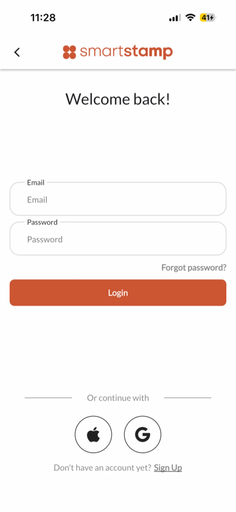
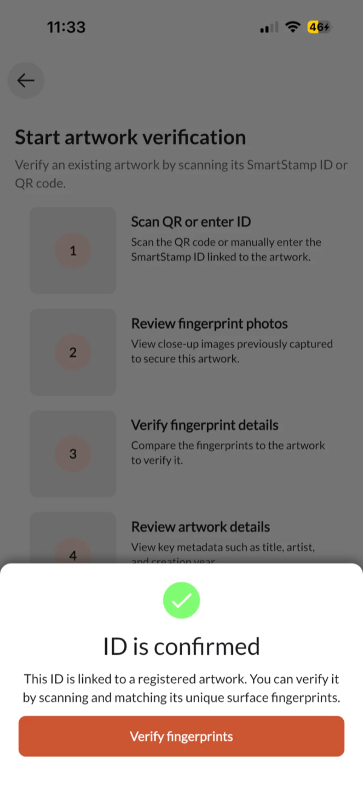
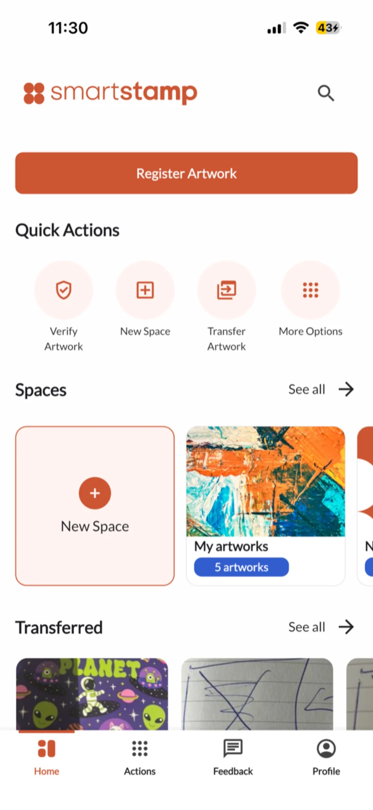
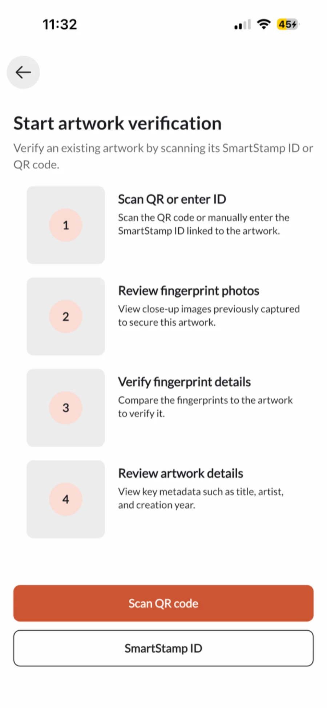
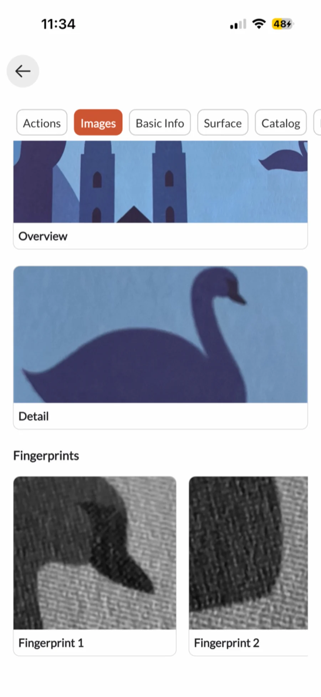
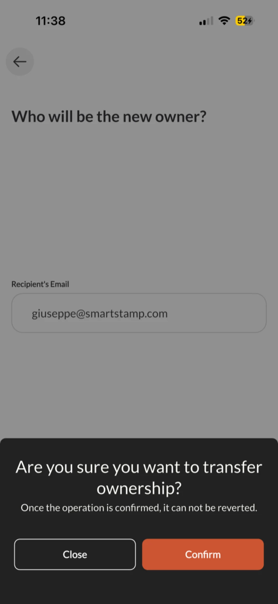
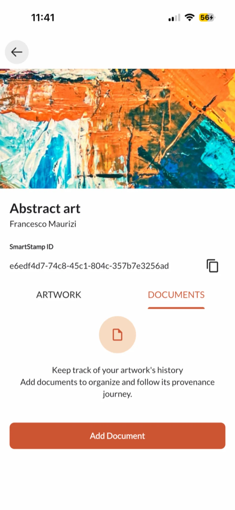
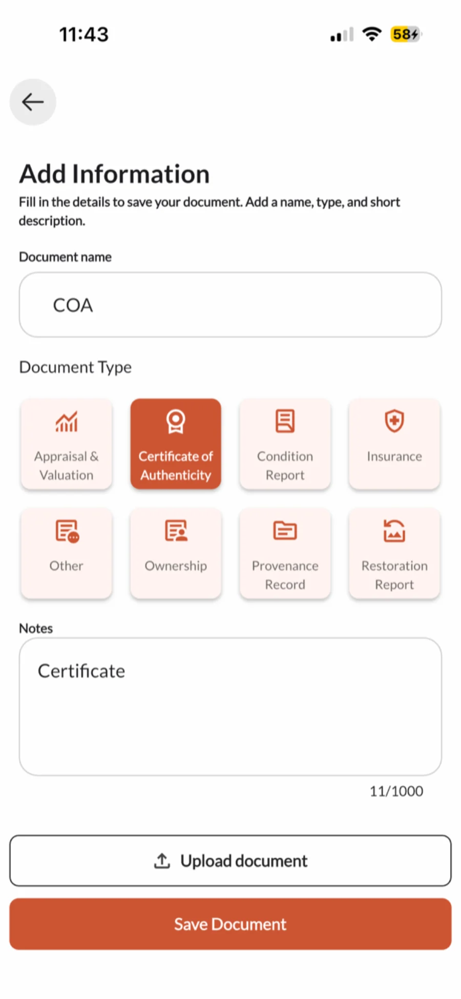

SmartStamp Mobile
The SmartStamp app is how galleries and collectors check an artwork or collectible in front of them. A scan session captures up to nine close-up images of the surface and compares them with the fingerprint recorded at registration. It also handles ownership transfers when a work changes hands.



Overview
The app came first. Usage data then showed that galleries and auction houses, not individual collectors, were driving adoption, so the focus moved to the web platform and the app's main job became verification. Most works are now registered under a microscope, and the app guides the user through capturing the registered details again and checks them against the fingerprint on record. Each work has a record in the app with its SmartStamp ID, ownership history, surface images and documents. When a work changes hands, the current owner transfers it in the app, and once the recipient accepts, the record updates on the web platform.
My role
- Role
- Founding Product Manager
- Context
- ETH Zurich MAS capstone, under Prof. Fredrik Hacklin
- Scope
- iOS and Android app, from discovery to launch
Decisions
- Ran discovery interviews with collectors, galleries and appraisers, and built the roadmap, backlog and go-to-market plan from them.
- Defined the North Star metric and its supporting KPIs, and built the PostHog dashboard the team uses to track them.
- Opened commercial talks with a leading Swiss art appraiser by prototyping a logistics workflow to their specification, used live as the working demo in the sales pitch.
Outcome
The iOS and Android MVP shipped in under six months, ahead of schedule and under budget.
Verification
- Gained
- Anyone can verify a work without training in surface imaging.
- Gave up
- A phone captures less detail than a microscope, so a phone check is less precise than a check with a second microscope.
The flow has four steps: scan the QR code or enter the ID, review the close-ups captured when the work was secured, compare them with the work in hand, and check its details such as title, artist and year.
At each step the app says which detail to capture and where, and once the match is confirmed it shows the ownership details.

Artwork record
The captures live in the Images tab. The same record carries the SmartStamp ID, the ownership history, the overview and detail photos, and any attached documents.

Ownership transfer
- Gained
- Once accepted, a change of ownership can't be reversed by one side alone, and a transfer sent by mistake can still be pulled back.
- Gave up
- Ownership stays pending until the recipient accepts. After that, a mistake can only be fixed by the new owner sending the work back.
The current owner enters the recipient's email address and confirms. The recipient is notified by email, and once they accept, the artwork record updates, both parties receive the transfer record, and the earlier ownership history stays in place.

Documents
Everything uploaded goes into the same audit-proof archive as the web platform, certified against the Swiss rules for keeping business records (GeBüV). Each document carries proof that it hasn't changed since it was stored, and every access is logged.


Metrics and KPIs
- Gained
- One number covers the whole product, and verification, the app's main job, feeds it directly.
- Gave up
- A single total hides who is driving it, so the team splits active accounts by type.
The app's inputs follow its own flow: a user gets a verified profile through a one-off identity check, verifies works and, when one changes hands, transfers it. Each step is tracked with app events in PostHog and reviewed every week, so a drop at any point shows up before it reaches the North Star. Session replays of selected journeys then show where people hesitate or give up, which the numbers alone can't.
- KYC completionVerified profiles, and where people drop out
- Verification completionStarted verifications that reach a result
- Time to verifyFrom scan to result on screen
- Transfers per monthTransfers accepted by the recipient
| Metric | How it is measured | Why it matters |
|---|---|---|
| Works verified per monthNorth Star | Unique works with at least one completed verification in the calendar month, counted across the app and the web platform. | Verification is the app's main job, so the app moves the North Star directly. |
| KYC completionInput | Users who finish the one-off identity check and get a verified profile, divided by those who start it, with each drop-out logged at the step where it happened. | A verified profile is what lets an ownership record name a real owner. The check happens only once, so drop-outs show exactly where new users are lost. |
| Verification completionInput | Verifications that reach a result divided by verifications started from a QR code or a SmartStamp ID. | The capture is guided step by step, and this shows which step people give up on. |
| Time to verifyInput | Median time from scanning the QR code or entering the ID to the result on screen. | A check that takes too long gets skipped, and a skipped check never counts toward the North Star. |
| Transfers per monthInput | Ownership transfers accepted by the recipient each month. | Works are usually checked when they change hands, so transfers and verifications rise together. A fall in transfers is an early warning. |
| Account type splitSegment | Active accounts each month, split into galleries and auction houses on one side and individual collectors on the other. | It showed that businesses, not collectors, were driving adoption, and that finding moved the product to web first. |
Architecture
Details
- Gained
- Both platforms shipped in under six months with one team.
- Gave up
- Native features come through plugins, fine UI details are harder to control, and the app relies on community packages that can be deprecated.
Firebase handles real-time sync, authentication and file storage, PostHog tracks product usage, and Postmark sends the transactional email for ownership transfers and document sharing.
Flutter, single codebase
One Dart codebase ships to iOS and Android. Device features such as the camera are reached through plugins, which have to be kept up to date as each platform changes.
Firebase, real-time sync
Firestore keeps the mobile app and the web dashboard in sync with no polling. Authentication, storage and functions sit in the same project, so the two platforms share one infrastructure.
PostHog and Postmark
PostHog captures funnel data and feature usage without sending data to third-party ad networks. Postmark handles time-sensitive transactional email: transfer confirmations, document delivery, and status updates.